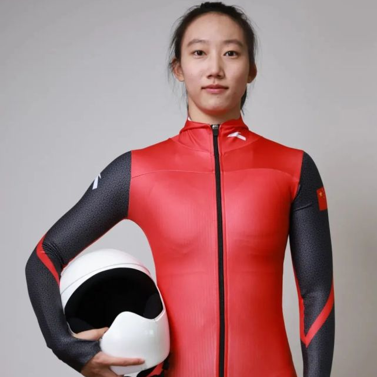

珍藏经典，星耀冬奥
【来源】：信息科大奥宣团 | 2022-02-20
开幕式——让世界瞩目中国
令世界瞩目的北京冬奥会开幕式圆满成功。此次开幕式既融入现代科技，又彰显着古韵浪漫。但最让人激动的还是中国代表团身披中国红，挥舞国旗入场的那令人激动的瞬间。鸟巢响起激动人心的《歌唱祖国》的乐声。钢架雪车运动员赵丹和速度滑冰运动员高亭宇担任中国代表团开幕式旗手，英姿飒爽，斗志昂扬！中国红再一次点燃现场激情，将气氛推到高潮，将自豪感拉满！中国再次惊艳世界！
开幕式执旗手——高亭宇
万众的焦点凝聚在旗手的身上。高亭宇，是一位朝气蓬勃的帅气小伙，中国速度滑冰运动员。1997年12月15日出生于中国黑龙江省伊春市南岔。他小小年纪，已经斩获很多奖牌，获得了不少骄人的成绩。 高亭宇2005年开始接触滑冰。那个时候年仅7岁，小小的他充满了对冰雪运动的热爱。2008年的时候开始了冬季项目专项练习。时隔三年被选拔到黑龙江省速度滑冰队，后来又入读哈尔滨体育学院。2016年第十三届全国冬季运动会上，他斩获了速度滑冰男子500米冠军，这一成绩让不少人关注到他，同年5月被选入中国速度滑冰队进行训练。 人因梦想而伟大。带着冰雪之梦，高亭宇滑出国门、滑向亚洲、滑向世界！ 2017年2月他以34秒69的成绩获得札幌亚洲冬季运动会速度滑冰男子500米金牌，刷新了亚洲纪录；12月，他又在速度滑冰世界杯美国站男子500米A组比赛中滑出34秒34的成绩，刷新个人最好成绩并创造新的全国纪录。他凭借着扎实的基础、不懈的努力，在速滑道路上越走越稳。2018年2月，高亭宇以34秒65的成绩夺得平昌冬奥会速度滑冰男子500米铜牌，成为首位在冬奥会上夺得速滑项目奖牌的中国男子选手。 作为一名国际级运动健将，他凭借着身上的一股韧劲，不断超越着自己，刷新着纪录。2020年2月，高亭宇在世界速度滑冰单项锦标赛滑出34秒282的成绩，创造个人最佳纪录。2021年3月，高亭宇获得全国速滑锦标赛男子短距离全能500米第一次比赛冠军。9月，在中国杯速度滑冰精英联赛中，高亭宇以33秒83的成绩刷新他个人保持的速度滑冰男子500米全国纪录。11月，在速度滑冰世界杯波兰站男子500米A组决赛中，高亭宇以34秒26的成绩获得冠军。 成绩属于过去，未来任重道远，努力才能创造奇迹。在比赛中他也有过失误，有过沮丧，但年仅24岁的他有着初生牛犊不怕虎的冲劲、猛劲，不怕困难不服输的体育精神。凭借在速度滑冰世界杯分站赛摘金的表现，高亭宇成功获得2022年北京冬奥会参赛资格。当得知自己作为北京冬奥开幕式中国队旗手时，他激动地表达了自己的心声：“很荣幸能够成为北京冬奥会中国代表团的旗手。主场作战，本就是让人极度兴奋的一件事情，而旗手的身份则更能让我充满力量。这也是我一直梦寐以求的一个角色。我一定不会辜负这份信任，会争取在赛场上展现出自己最好的一面。”中国代表团秘书长倪会忠谈到旗手选择时表示，高亭宇这才是第二次参加冬奥会，选择他作为旗手，是希望大家能感受到代表团的期望，既肯定运动员们的努力，也肯定他们的突破。 功夫不负有心人。2月12日，北京冬奥会速度滑冰男子500米比赛中，高亭宇夺得金牌，并以34秒32的成绩打破该项目奥运会纪录。这也是中国代表团在本届冬奥会上的第4枚金牌。新的速滑男子500米王者，属于中国的高亭宇！ 现场主持人高声宣布他夺冠的那一刻，国家速滑馆媒体席上的一些国外记者，都不由得竖起了大拇指。高亭宇破奥运会纪录夺冠，在这场“冰上飞人大战”中，“小个子”高亭宇击败了欧美的诸多强敌，硬生生从他们的领地，杀出一条血路。他这样的成绩“相当于黄种人跑赢了巅峰时期的博尔特。” 因此，请大家相信，每一个中国运动员都能用永不言弃的昂扬精神，用高超稳定的竞技水平，拼搏奋斗、为国争光，展示了不懈奋斗的青春风采。
开幕式执旗手——赵丹
理想的路总是为有信心的人预备着。更年轻的小将 00后的赵丹是本届冬奥会中国队入场的另一位执旗手。 2002年12月14日出生的赵丹，如今只有19岁。2018年，她才从跳远和三级跳远运动员，转到了钢架雪车项目，破格进入国家队备战冬奥会。最初接触钢架雪车时，她的师兄耿文强为她讲解了关于钢架雪车的知识，邀请她来尝试一下。当她亲身趴到橇上的时候，真切地感觉到了钢架雪车的魅力、速度的魅力。当风从身体两边呼呼吹过，身体像一个小火箭一样飞窜出去，她一下子爱上了冰雪运动。 所有的坚持都源于热爱。从那时起，赵丹就认准了这个项目并坚持下来。目前她是中国钢架雪车国家队中年龄最小的运动员，但在国家队的4年间成绩提高迅速。 在我们眼里她是一个跨界跨项运动员，但也是一个有着聪明才智的、具有运动天赋的好苗子。仿佛是骨子里天生带着雪车基因，跨界后不久便在一系列比赛中，展示了她过人的天分。 2019-2020赛季，赵丹代表中国队首次参加了在瑞士举办的青奥会比赛并取得了第7名的成绩，这是中国女子钢架雪车首次登上冬青奥会赛场。 2021-2022赛季，赵丹在洲际杯因斯布鲁克站比赛中夺得冠军，世界杯最好成绩为第十五名。 在国内选拔赛中，赵丹两次比赛4次滑行均取得第一名，最终以总分第一的成绩入围北京冬奥会。 在北京冬奥会上，中国在女子钢架雪车项目中共取得两个名额，这也是中国首次参加冬奥会女子钢架雪车项目的比赛，赵丹将和队友黎禹汐一起代表中国参赛。 在得知当选旗手后，赵丹也感到了自己身上的使命感。她在个人社交媒体表示，自己深感荣幸。“能够在主场参加冬奥会，已经让我觉得自己很是幸运，如今又多了一个身份，让我更感到身上的责任感与使命感。” “我一定会珍惜这份信任，激发出内心的巨大潜能，争取在赛场上展现出最好的自己。” 赵丹的父亲赵海峰说，赵丹是一个十分能吃苦的孩子，喜欢和男孩以及比她大的孩子玩耍，喜欢冒险。她从小较独立，进入国家队后，每年回家只有十几天，各种事情都要独立面对，有困难也不会抱怨，总是努力克服。她的教练也说，她梦想成为优秀的运动员，并为之不断地拼搏，训练作风过硬，吃苦耐劳，有理想、有主见、坚强有韧性，对事物的分析能力及自律性极强。 从赵丹身上，不难看到在中华体育精神的鼓舞下多少有志青年点燃了自己的中国梦，清醒地知道自己奋斗的目标，不畏艰难险阻，只因热爱，要将中华体育精神发扬到每个领域，激扬起伟大的民族自信。 开幕式后，赵丹在微博上这样写道：“以旗手身份参与北京冬奥会开幕式，是我一生都不会忘记的瞬间。手举国旗走进体育场时，有一种热泪盈眶的感觉。深深感受到我们祖国的美好，强大。感谢为开幕式、冬奥会默默付出的所有人，在这里给大家拜年，春节假期大家也别忘关注我们中国冬奥健儿，祝中国代表团好运相伴！” 此次冬奥会，赵丹全力以赴，飞出了新历史。 钢架雪车运动在欧美国家已开展百年有余，中国队组建晚，又缺乏训练场地，参加本次冬奥会，是中国女子选手在冬奥会钢架雪车项目上的首秀，但成绩卓越。2月12日晚间，女子钢架雪车迎来最后两轮的较量。在此前两轮的滑行中，赵丹在第一轮的滑行中以1分02秒26的成绩刷新女子钢架雪车在“雪游龙”赛道的纪录，最快时速达127公里。最终，第一轮比赛赵丹位列第三，前两轮比赛总成绩位列第四。第三轮第四轮的比赛排列在第9位，尽管未能站上领奖台，但第9名依然是中国女选手在这个项目的最好成绩。赵丹，成绩优异！好样的！ 我们深知，取得成功的人不一定是最聪明的人，但一定是为了理想而奋力拼搏的人。赵丹的这份热爱每一个中国人都能深深感受到。

新冬奥，星闪耀，少年强，中国强！中国体育健儿们赛场扬威，奋勇向前，为国争光。面对未来，我们依旧勇敢无畏，万众一心，携手并进，用热爱、用奋斗去点亮伟大的中国梦！
下一篇：向往在蓝天白雪间的翱翔
浏览量：34

- 联系
我们

工作日：
早9:00-晚18:00
杨老师：
400-888-8888